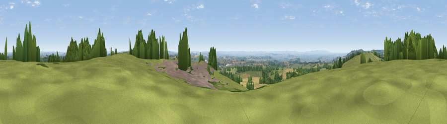

Viewpoint near Oakhill
#6968 in England · top 10% of its area beats it · near Oakhill · access?Where it is
The exact computed spot (ST 61926 46740). Click the marker for map links.
Public access: no public right of way or access land is recorded at this exact spot — it may be on private land. Computed from Natural England's CRoW access layer and OpenStreetMap rights of way — not the legal definitive map. Always verify locally.
The view, rendered

A 360° render of this exact spot computed from the terrain model, tree cover and land cover — summer colours, afternoon light, calibrated against photographs of famous viewpoints. Real trees, hedges and buildings will differ in detail.
The panorama
Grey silhouette: terrain skyline in each direction (720 bearings, Earth curvature and refraction included). Dashed green: skyline with trees (+15 m) and buildings (+8 m) as obstacles. Blue strip: how far the ground is visible on each bearing.
Where the view opens
Wedge length = distance to the farthest visible ground on that bearing (vegetation-aware). Rings at 10, 25 and 50 km.
What fills the view
58% grassland · 17% cropland · 17% woodland · 8% built-up
Angular shares of the visible panorama (visual magnitude), not map area. Landscape diversity 0.50 (0–1 Shannon).
Key numbers
More beautiful places nearby
The staircase of upgrades: each row has a higher view potential than everything closer. Driving times are estimates from straight-line distance, calibrated against real road routing — check an actual route before setting out.
| Place | Direction | Drive | Score |
|---|---|---|---|
| Viewpoint near Binegar | WNW · 1 km | ~4 min | 69.2 |
| Viewpoint near Oakhill | ESE · 3 km | ~7 min | 71.3 |
| Viewpoint near West Horrington | WNW · 6 km | ~12 min | 73.2 |
| Viewpoint near Wookey Hole | WNW · 8 km | ~16 min | 73.5 |
| Viewpoint near Milton Clevedon | SSE · 11 km | ~21 min | 73.9 |
| Lamyatt Beacon | SSE · 12 km | ~22 min | 74.6 |
| Viewpoint near Lamyatt | SSE · 12 km | ~22 min | 77.8 |
| Beacon Batch | NW · 17 km | ~30 min | 79.4 |
51.21858, -2.54654 · source: osm peak · position refined by local search. Computed location — check access rights before visiting.